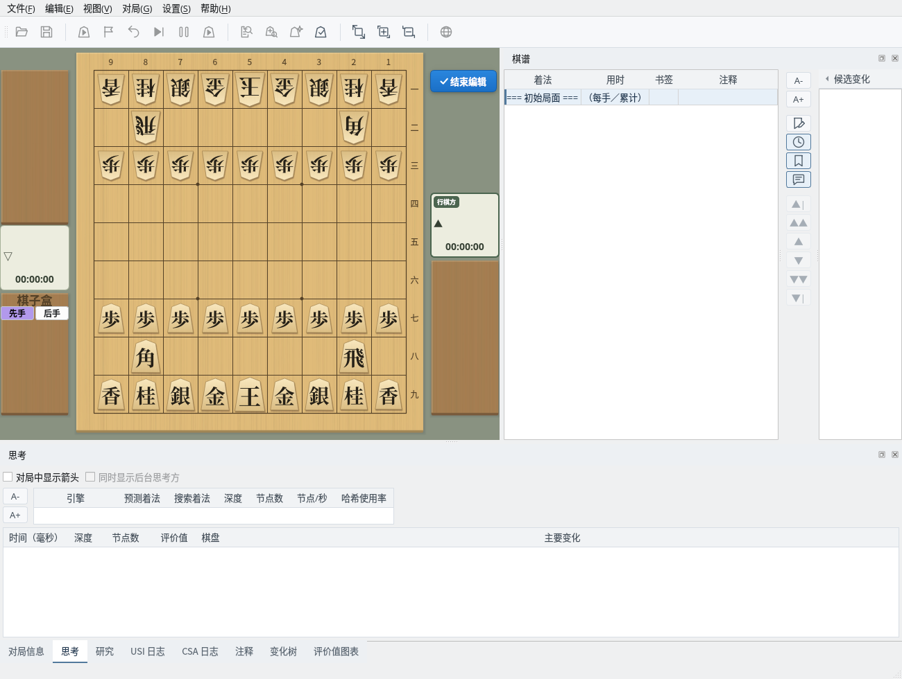
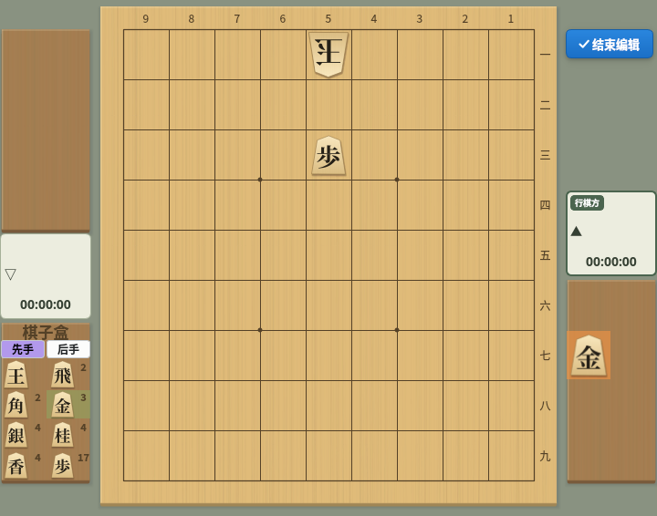
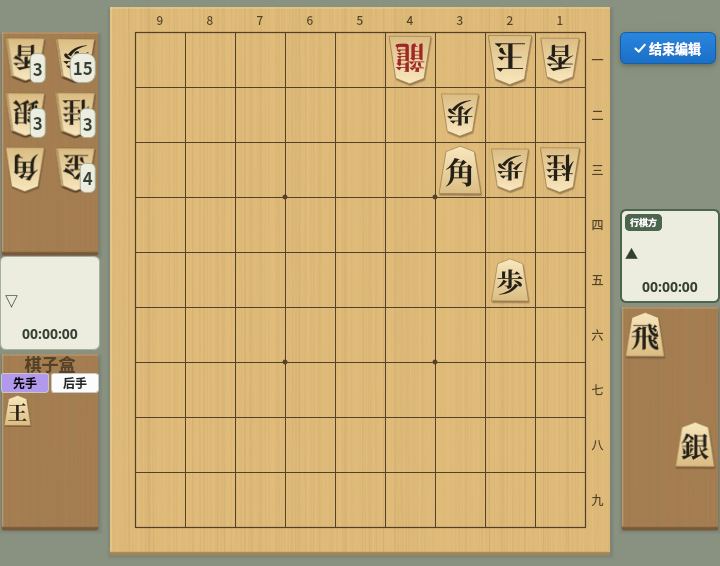
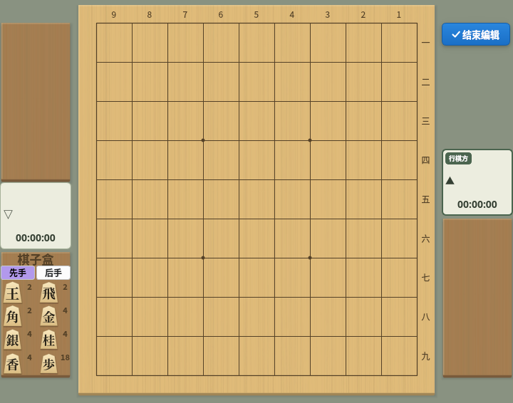
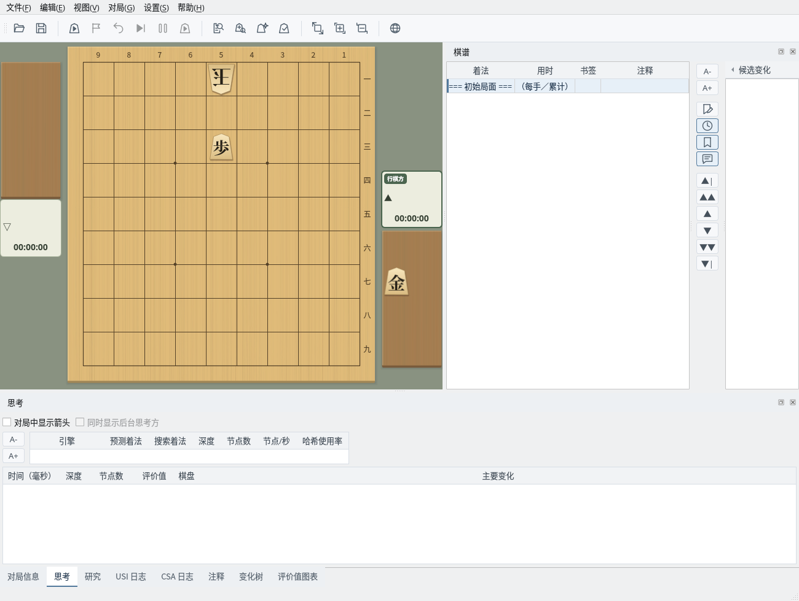

自由摆放棋子，创建任意局面
截图在 Linux 上以简体中文界面拍摄。
以当前显示的局面为基础，移动或摆放棋子来创建局面
选择“编辑”→“开始编辑局面”开始编辑。当前显示的局面就是编辑的起点，棋谱只保留“=== 初始局面 ===”一行（评价值图表也会清空）。如果棋谱有未保存的修改，会先询问是否保存。
编辑期间，棋盘右上方显示“✓ 结束编辑”按钮，左下方显示棋子盒。

编辑中：棋盘右上方显示“结束编辑”按钮，左下方显示棋子盒
用鼠标进行如下操作。棋子放到棋盘或驹台上后，归属于该位置的一方（放到对方驹台上即成为对方的持驹）。
用“将所有棋子放入棋子盒”清空棋盘，在棋子盒中选择“后手”并把玉放到 5一，再切换到“先手”把步放到 5三，然后把金放到先手的驹台上，就完成了一道头金一手诘的题目。

用棋子盒创建的局面：后手玉 5一、先手步 5三、先手持驹金
从菜单调用常用布局，并切换行棋方
选择“编辑”→“平手布局”可回到平手的初始布局。
选择“编辑”→“诘棋布局”会摆出一道诘棋例题。其余棋子全部成为玉方（后手）的持驹，攻方的玉放入棋子盒，这是诘棋的惯例。可以从这里移动棋子来创作题目。

诘棋布局：其余棋子是玉方的持驹，攻方的玉在棋子盒中
选择“编辑”→“将所有棋子放入棋子盒”，会把棋盘和驹台上的棋子全部放入棋子盒。用于从空棋盘开始创建局面。

将所有棋子放入棋子盒：棋盘和驹台清空，棋子盒显示数量
选择“编辑”→“切换行棋方”，可在先手和后手之间切换下一手的一方（行棋方）。对局者栏上带有“行棋方”标记的一方下一手。
将创建的局面作为初始局面，用于对局和研究
点击“✓ 结束编辑”按钮（或选择“编辑”→“结束编辑局面”）结束编辑后，创建的局面会成为棋谱的初始局面，棋子盒也会消失。
可以从这个局面开始对局（初始局面选择“当前局面”）、研究、搜索诘棋等。开始对局时，棋盘上需要先手和后手各有一枚玉。

结束编辑后：创建的局面成为初始局面